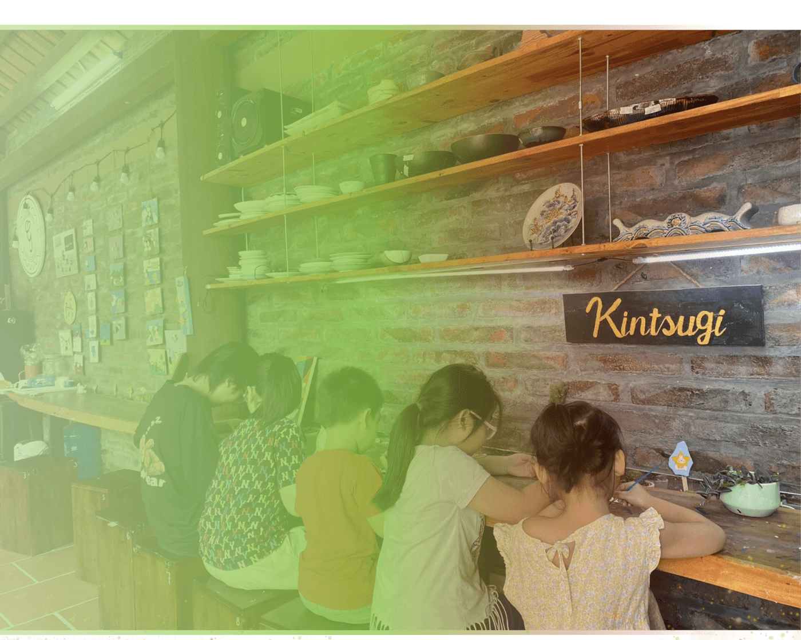
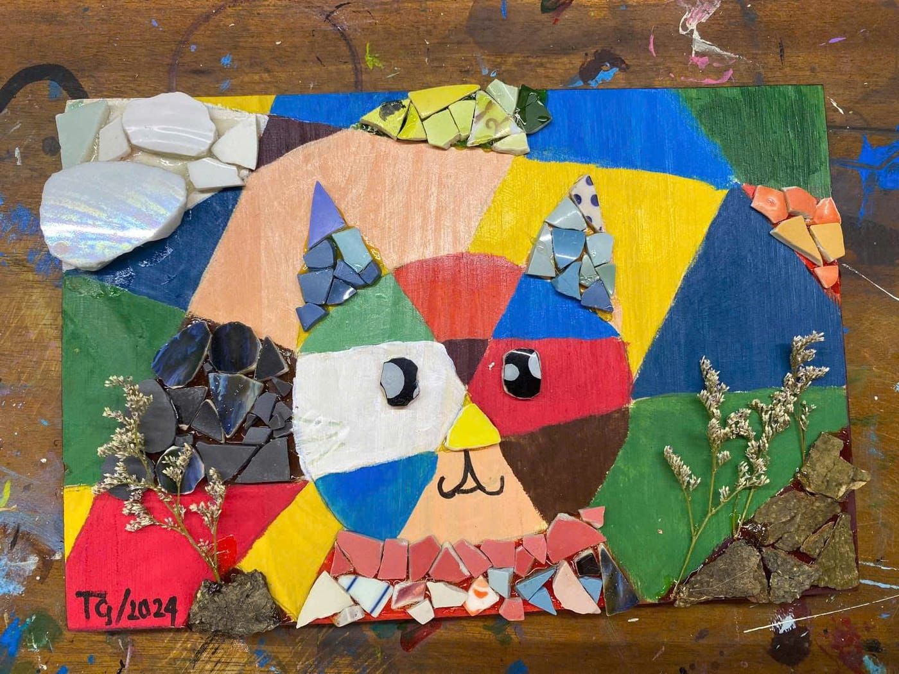
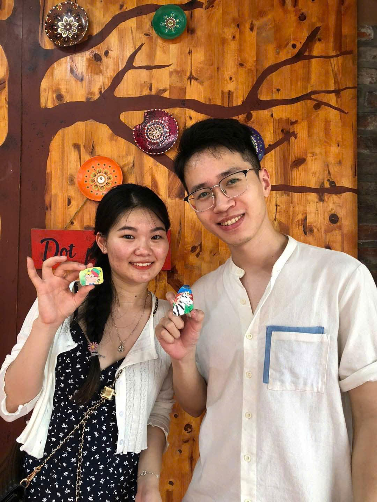
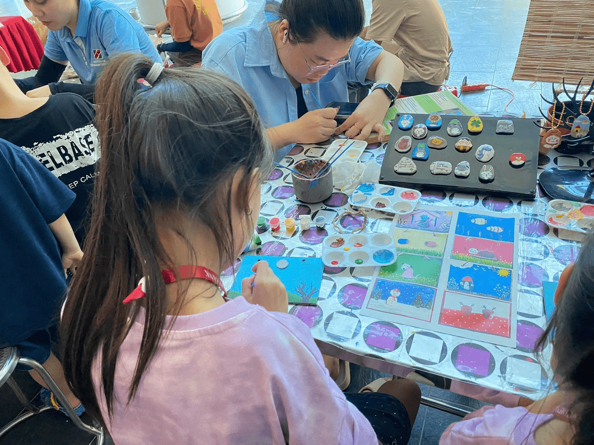
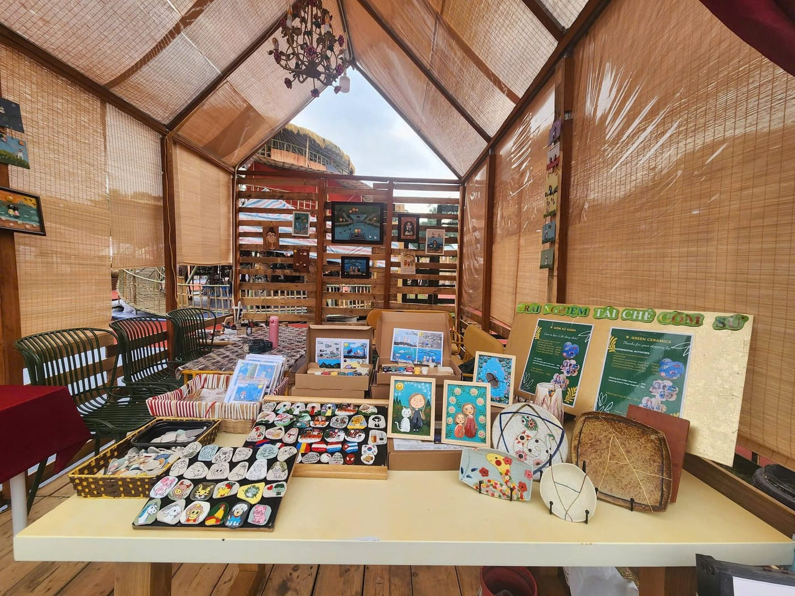
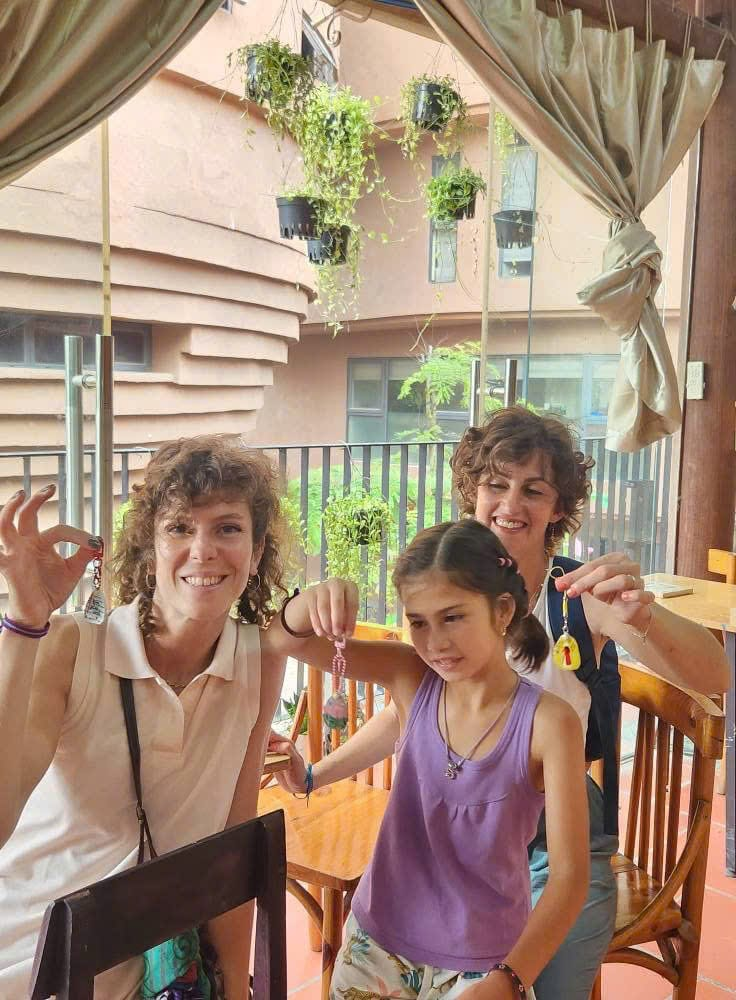
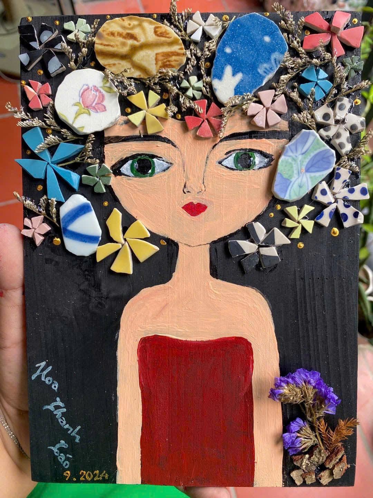
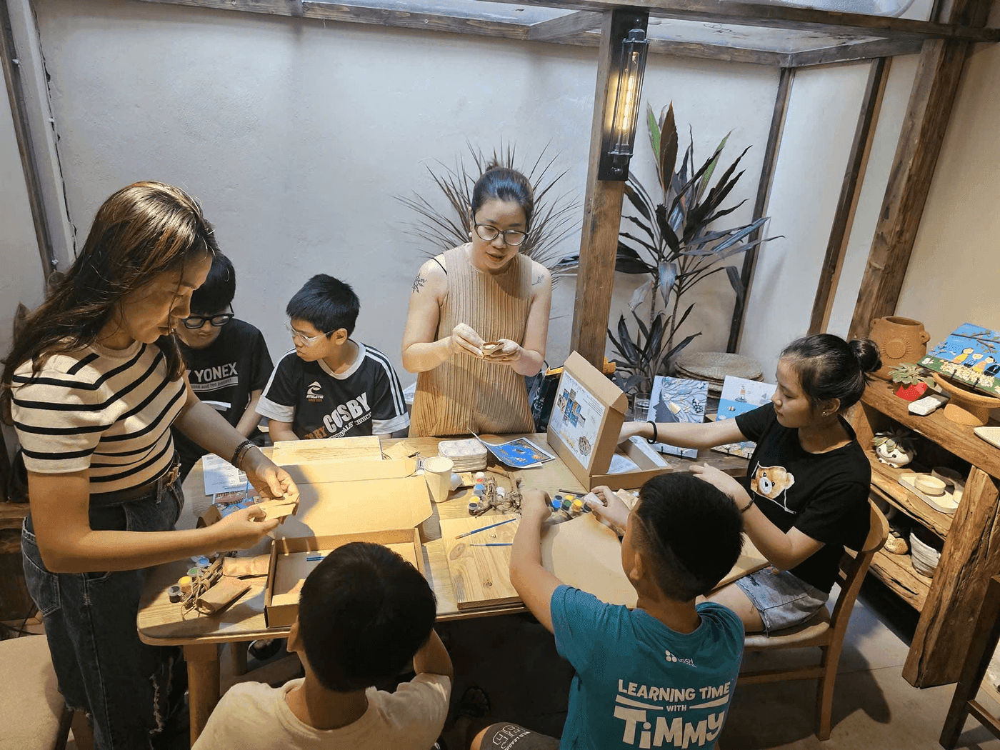

Blog Gốm Sứ Xanh
Hành trình tái sinh những mảnh gốm vỡ
Vì sao lại là gốm sứ xanh?
Đọc bài mới nhất >>
Phổ biến nhất
Bài viết gần đây
23 TH.12, 2024
Cà phê sáng VTV3 cùng Gốm Sứ Xanh
Tìm hiểu về quy trình làm gốm sứ, từ chọn đất sét đến nung sản phẩm.

23 TH.12, 2024
Hành trình tái sinh mảnh gốm vỡ
Một vòng đời mới cho gốm được tạo ra ở Gốm Sứ Xanh

23 TH.12, 2024
Lan toả thông điệp tái chế vì môi trường
Thu gom những mảnh gốm vỡ để lòng sông sạch hơn

23 TH.12, 2024
Khoảnh khắc xanh bên bàn tạo gốm
Một buổi workshop thích hợp cho cả gia đình

23 TH.12, 2024
Một ngày trải nghiệm tại Gốm Sứ Xanh
Tìm hiểu về quy trình làm gốm sứ, từ chọn đất sét đến nung sản phẩm.

23 TH.12, 2024
Lưu dấu vân tay của bạn trong từng sản phẩm
Tự tay trang trí và tái sinh những mảnh gốm vỡ

23 TH.12, 2024
Nơi cảm xúc được tạo hình
Tránh xa bộn bề của cuộc sống hiện đại, tìm đến gốm chữa lành

23 TH.12, 2024
Vì sao lại là Gốm Sứ Xanh?
Tìm hiểu về quy trình làm gốm sứ, từ chọn đất sét đến nung sản phẩm.